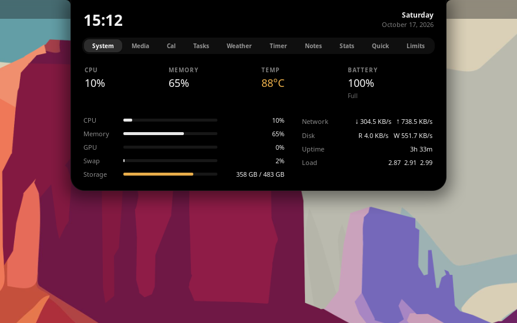
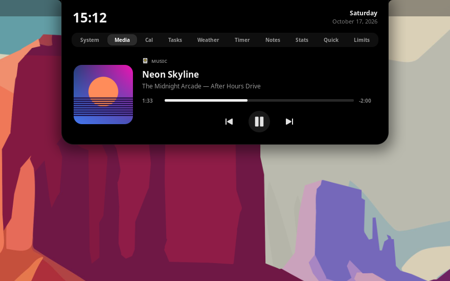
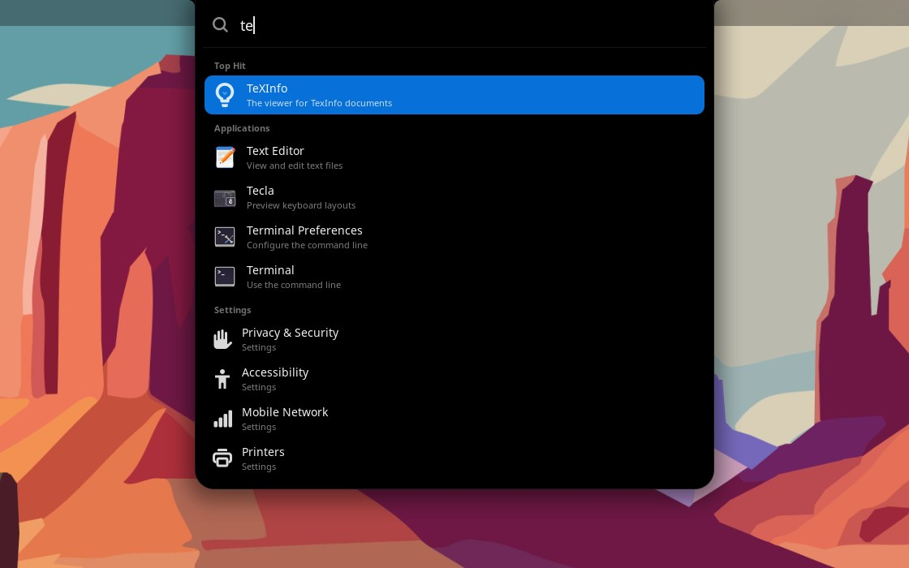
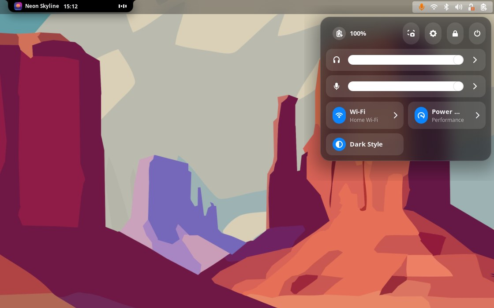
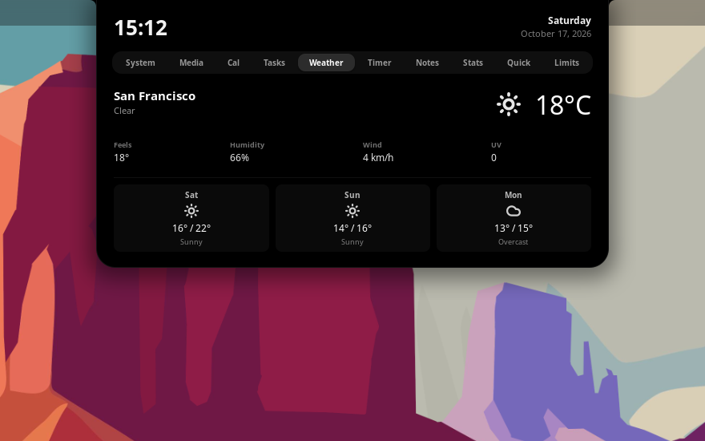
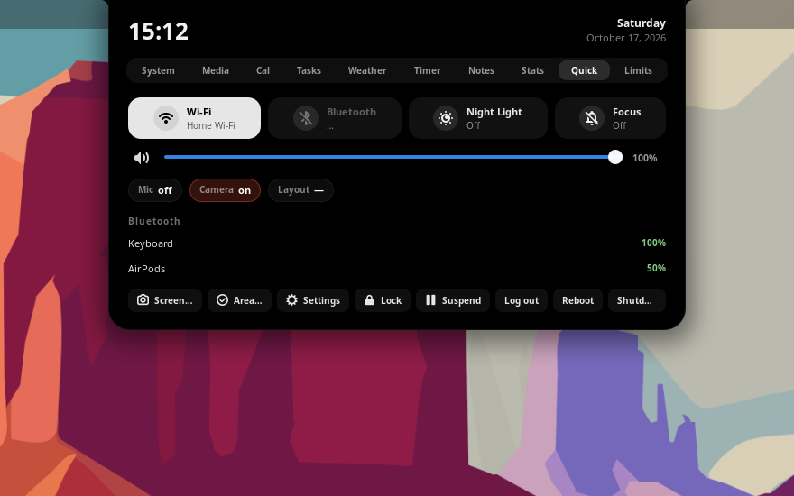

The notch
Shows date, time and battery when idle. Adds album art and live equalizer bars while music plays, or a countdown while a Pomodoro runs.
- Notch shape attached to the top edge, or a floating pill
- Hover or press Super + N to expand it
Notchex puts a MacBook-style notch at the top of your screen. It shows your music, timers, meetings and notifications, and opens into a full hub when you hover over it. It also adds a Dock, Spotlight search and a macOS-style desktop around it.
The notch replaces the top-bar clock. It stays small until something happens, then grows to show it.
Shows date, time and battery when idle. Adds album art and live equalizer bars while music plays, or a countdown while a Pomodoro runs.
The notch briefly grows for things you'd want to know about:
Hover to open a tabbed dashboard: system monitor, media, Google Calendar and Tasks, weather, Pomodoro, notes, stats and quick toggles. You can turn each tab on or off.
A macOS-style Dock that uses your GNOME favorites. Icons magnify as you move over them. Put it at the bottom, left or right, and keep it always on, auto-hiding or hiding only when a window covers it.
Press Super + Space and the notch turns into a search bar. Find apps, settings, files and system actions, or type 12*7+3 to use it as a calculator.
Frosted-glass top bar and menus, a Control Center look for Quick Settings, an auto-hiding top bar, three-finger zoom and optional traffic-light window buttons. You can turn each one off.
Every part of Notchex works on its own. Open the Features page in preferences, pick a preset, then switch individual parts on or off. Changes apply right away, with no log out.
The notch, Dock, Spotlight and the full macOS look.
Just the notch, with notifications and Spotlight. The rest of GNOME stays as it is.
Just the magnifying Dock. GNOME keeps its own clock.
Frosted glass and the Control Center style, with no notch and no Dock.
| Part | What it changes |
|---|---|
| Notch | Replaces the top-bar clock with the notch, live activities and the hub |
| Notifications in the notch | New notifications appear in the notch instead of a banner |
| Spotlight search | Super + Space search inside the notch |
| Auto-hide top bar | The top bar slides away until you reach the top edge |
| Dock | Magnifying Dock at the bottom, left or right |
| App and desktop look | Frosted glass, Control Center look, traffic-light window buttons, zoom gestures |
The notch resizes to fit each tab, so it never takes more room than it needs.
Screenshots of Notchex running on GNOME 46. Click any image to see it full size.






You can change both Notchex shortcuts in preferences.
| Input | Action |
|---|---|
| Super + N | Expand or collapse the notch |
| Super + Space | Open Spotlight search |
| ↑ ↓ · Tab · Enter · Esc | Move, switch category, open and close in Spotlight |
| Three-finger pinch | Zoom the screen in or out |
| Three-finger double-tap | Toggle zoom |
Plain GJS on top of GNOME Shell. The idle notch reacts to events instead of checking for them, so it uses almost nothing until something changes.
Notchex only goes online for features you turn on, like weather or Google Tasks. Access tokens stay in memory and are never written to disk.
The clock updates once a minute. System stats are only read while the System tab is on screen. The equalizer runs in a separate process, so it can never freeze your desktop.
Notchex installs for your user only and never needs sudo. Turn off a module and it stops completely. Uninstall and it's gone.
Run this in a terminal, then log out and back in.
curl -fsSL https://raw.githubusercontent.com/AdityaTakuli/Notchex/main/install.sh | bash